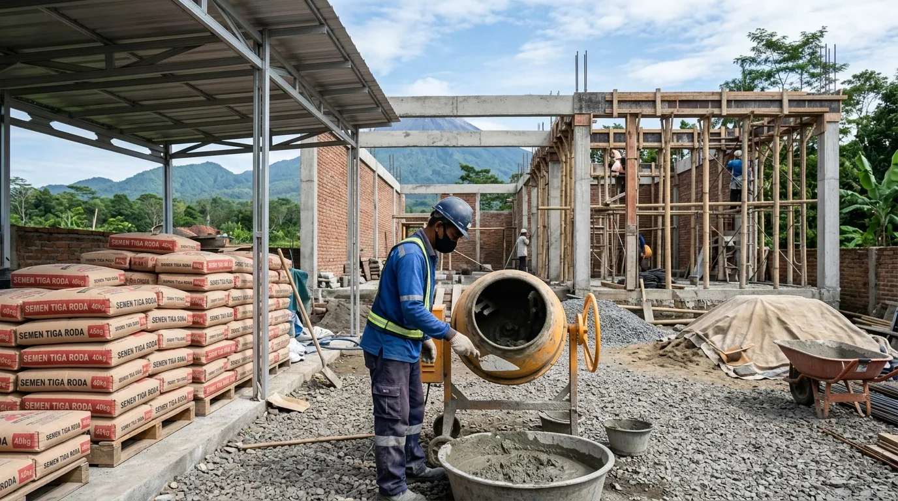

Ringkasan Inti
- Kontraktor rumah Malang berpengalaman mampu membedakan mutu teknis semen PCC, Portland, dan karakteristik bata lokal Jawa Timur berdasarkan standar SNI.
- Penggunaan semen dan bata lokal Jawa Timur secara tepat memangkas ongkos angkut ekspedisi tanpa mengurangi kapasitas dukung struktural hunian.
- Jejaring kemitraan kontraktor dengan distributor material tangan pertama memastikan jaminan stok terjaga dan harga yang jauh lebih kompetitif.
- Penerapan inspeksi visual dan uji acak di lokasi proyek meminimalisir risiko penggunaan bata mentah atau semen lembap yang berisiko memicu retak rambut.
Daftar Isi Artikel
Dalam konstruksi bangunan rumah tinggal di kawasan Malang Raya, material semen dan bata merupakan tulang punggung yang menentukan kekokohan struktural serta keawetan dinding dalam jangka panjang. Kontraktor rumah Malang yang profesional memegang peran kunci dalam menyeleksi produk semen dan bata buatan lokal Jawa Timur agar tercapai perpaduan ideal antara ketahanan cuaca pegunungan, efisiensi anggaran, dan kecepatan pengerjaan di lapangan.
1. Peran Strategis Kontraktor dalam Menentukan Semen dan Bata Berkualitas
Menentukan material bukan sekadar memilih merek populer di toko bangunan terdekat. Kontraktor bangunan memahami bahwa setiap tahapan konstruksi menuntut formulasi material yang berbeda. Semen yang digunakan untuk cor struktur pondasi telapak, balok sloof, dan kolom praktis membutuhkan tipe semen berkekuatan tekan tinggi, sedangkan pekerjaan pasangan dinding dan plesteran membutuhkan semen yang memiliki daya rekat plastis optimal untuk mencegah keretakan.
Begitu pula dengan pemilihan bata. Kontraktor bertindak sebagai kurator teknis yang membandingkan kelebihan bata merah bakar pres lokal (seperti sentra bata Malang Selatan, Blitar, atau Welahan) dengan bata ringan (Autoclaved Aerated Concrete / AAC). Melalui analisis beban struktur dan kondisi tapak tanah setempat, kontraktor memberikan solusi terbaik apakah proyek lebih efisien menggunakan bata ringan untuk mempercepat waktu pasang, atau bata merah konvensional yang terkenal kokoh dan memiliki insulasi termal alami yang baik.

2. Kriteria Penilaian Kualitas Semen dan Bata Lokal Jawa Timur
Kontraktor yang berdedikasi memiliki prosedur pengujian lapangan (*field testing*) sederhana namun efektif untuk memastikan suplai yang datang ke lokasi proyek benar-benar memenuhi kualifikasi mutu standar:
- Presisi Dimensi dan Kematangan Pembakaran Bata: Bata merah berkualitas memiliki sudut yang siku, warna merah terakota merata tanpa bintik hitam gosong, serta berdenting nyaring saat dua bata dibenturkan perlahan.
- Tingkat Porositas dan Penyerapan Air: Bata yang terlalu rakus menyerap air akan menyedot kadar air pada adukan semen sehingga plesteran cepat retak. Kontraktor profesional selalu merendam bata sebelum dipasang.
- Kondisi Fisik dan Usia Kantong Semen: Memastikan semen bebas dari gumpalan keras (lumping) akibat kelembapan gudang dan diproduksi dalam rentang tanggal yang segar sesuai standar pabrikan (seperti Semen Gresik atau Dynamix Jawa Timur).
- Sertifikasi SNI dan Reputasi Produsen: Memverifikasi nomor SNI resmi untuk menjamin konsistensi kimiawi dan waktu pengeringan (*setting time*) yang stabil di udara dingin Malang.
Catatan Arsitek Malang
Untuk dinding rumah di Malang dengan tingkat kelembapan tinggi, kontraktor kami selalu mewajibkan aplikasi adukan kedap air (trasram) dengan perbandingan 1 semen : 2 pasir pada area setinggi minimal 40–50 cm di atas sloof dan seluruh area kamar mandi. Hal ini melindungi interior dari rembesan air tanah kapiler (rising damp) yang merusak cat dan wallpaper.
3. Pengaruh Pengalaman Kontraktor terhadap Daya Tahan Konstruksi
Material unggul tidak akan menghasilkan bangunan yang kokoh tanpa teknik aplikasi yang tepat. Di sinilah pengalaman jam terbang kontraktor rumah Malang terbukti nyata. Kontraktor terampil mengarahkan tukang untuk menjaga takaran adukan (*mix design*) yang konsisten menggunakan kotak takaran (dolak), bukan sekadar kira-kira dengan sekop.
Selain itu, jaringan distribusi yang luas memungkinkan kontraktor memperoleh harga partai besar (*bulk price*) langsung dari distributor utama di Jawa Timur. Penghematan biaya ini diteruskan kepada klien dalam bentuk efisiensi RAB, tanpa sedikit pun menurunkan kelas spesifikasi teknis bangunan. Pengawasan ketat pada proses perawatan beton (*curing*) dengan penyiraman teratur juga menjadi pembeda antara struktur yang retak dalam dua tahun dengan struktur yang bertahan kokoh puluhan tahun.
4. FAQ (Pertanyaan Sering Diajukan)
Apakah kontraktor rumah Malang selalu menggunakan material lokal Jawa Timur?
Ya, sebagian besar kontraktor profesional memprioritaskan semen dan bata asal Jawa Timur karena rantai pasok yang dekat dan biaya pengiriman yang sangat ekonomis. Mutu semen lokal Jawa Timur seperti Semen Gresik atau Holcim/Dynamix sudah terbukti andal memenuhi standar konstruksi nasional.
Bagaimana cara memastikan kontraktor tidak menggunakan material substandar?
Lakukan pengecekan berkala terhadap dokumen faktur pengiriman (surat jalan) dan pastikan merek yang tiba di lapangan sesuai dengan dokumen Rencana Kerja dan Syarat (RKS) yang telah disepakati bersama dalam surat perjanjian kerja.
Apakah biaya material akan lebih murah jika ditentukan oleh kontraktor berpengalaman?
Kontraktor dengan reputasi solid memiliki akses ke harga distributor tingkat pertama (*agen/depo besar*) berkat volume pemesanan rutin. Hal ini memberikan keuntungan harga yang jauh lebih kompetitif dibandingkan pemilik rumah berbelanja mandiri di tingkat pengecer.
Bangun Rumah Kokoh dengan Material Terbaik di Malang
Wujudkan hunian berkualitas tinggi dengan pengawasan ketat, material terstandarisasi SNI, dan transparansi anggaran bersama Arsitek Malang.

Muhammad Musyaffa
Penulis & Tim Riset Arsitektur Maroon Arsitek Malang, spesialis pengawasan mutu konstruksi sipil, seleksi material lokal Jawa Timur, dan pengendalian kualitas bangunan.